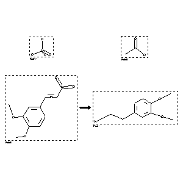

 |
| FA | RX(1); FLST(1); RX(1) |
Reaction (1 of 1)
| Reaction ID | 6681052 |
| Reactant BRN | 2037554; 506007; 1467383 |
| Reactant | sulfuric acid; acetic acid; palladium; (E)-3,4-dimethoxy-b-nitro-styrene |
| Product BRN | 474393 |
| Product | 3,4-dimethoxy-phenethylamine |
| No. of Reaction Details | 1 |
Reaction Details (1 of 1)
| Reaction Classification | Chemical behaviour |
| Other Conditions | Hydrogenation |
| Comment | Handbook |
| Citation Pointer | 1586999; Journal; Maurer; Schiedt; JPCEAO; J.Prakt.Chem.; <2> 144; 1935; 41, 48;1587000; Patent; Kindler; DE 571794; 1930; FTFVA6; Fortschr.Teerfarbenfabr.Verw.Industriezweige; DE; GE; 19; 945;512392; Journal; Kindler; Brandt; ARPMAS; Arch.Pharm.(Weinheim Ger.); 273; 1935; 478, 482; |
Reference (1 of 3)
| Citation Number | 512392 |
| Document Type | Journal |
| Authors | Kindler; Brandt |
| CODEN | ARPMAS |
| Journal Title | Arch.Pharm.(Weinheim Ger.) |
| (Series) Volume | 273 |
| Publication Year | 1935 |
| Page | 478, 482 |
Reference (2 of 3)
| Citation Number | 1586999 |
| Document Type | Journal |
| Authors | Maurer; Schiedt |
| CODEN | JPCEAO |
| Journal Title | J.Prakt.Chem. |
| (Series) Volume | <2> 144 |
| Publication Year | 1935 |
| Page | 41, 48 |
Reference (3 of 3)
| Citation Number | 1587000 |
| Document Type | Patent |
| Patent Author | Kindler |
| Patent Number | DE 571794 |
| Patent Year | 1930 |
| CODEN | FTFVA6 |
| Journal Title | Fortschr.Teerfarbenfabr.Verw.Industriezweige |
| Country Code | DE |
| Language Code | GE |
| (Series) Volume | 19 |
| Page | 945 |